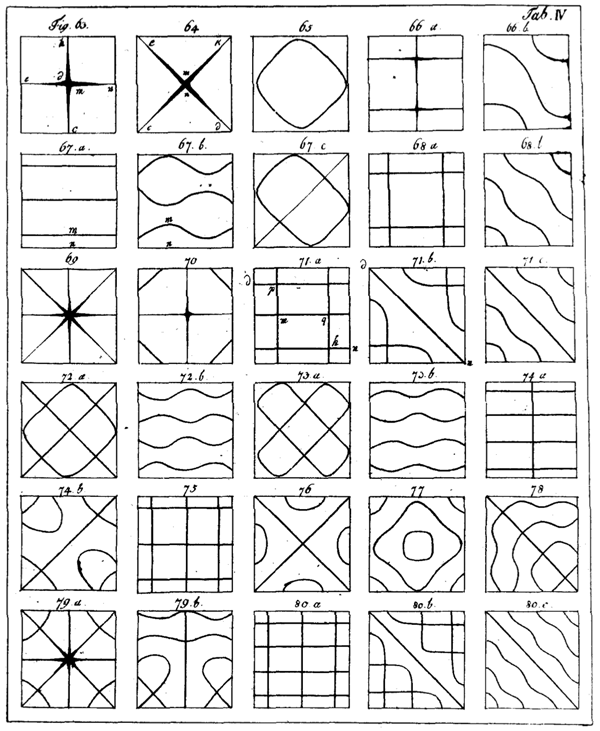

Acoustics - Wind Instruments
sara.martin@ntnu.no
Musical Instruments
Hornbostel–Sachs classification:- Chordophones: vibrating strings
- Aerophones: vibrating columns of air
- Membranophones: vibrating membrane/skin
- Idiophones: vibrating the whole instrument
- Electrophones: vibrating loudspeaker
Family of BRASS instruments
Family of BRASS instruments
Family of Woodwind instruments
Family of Woodwind instruments
How is sound created by the wind instruments?
Simple model Wind instruments
From springs to pipes:

OPEN vs CLOSED pipes
greatest at an OPEN end than CLOSED end
MAXIMUM at CLOSED end
Resonances in cylindrical OPEN pipes

*: End correction ($0.61\cdot r$, r = pipe's radius)
Resonances in cylindrical CLOSED pipes

BRASS instruments
BRASS instruments: CLOSED pipe
ODD-numbered harmonics:BRASS instruments: adding the BELL
BRASS instruments: adding the BELL
BRASS instruments: adding the MOUTHPIECE
BRASS instruments: adding the MOUTHPIECE
- Peaks at LOWER resonances are enhanced
- Lowest resonance of mouthpiece (750-800 Hz)
- Design bell & mouthpiece: HARMONIC relationship (air column resonances = PARTIALS of tone)
BRASS instruments: adding the MOUTHPIECE
Turning point (used to calculate the EFFECTIVE LENGTH) depends on FREQUENCY:BRASS instruments: Valves & Slides
BRASS instruments: RADIATION

WOODWIND instruments
WOODWIND instruments
WOODWIND instruments: Pipe-Reed System
- Period of lowest mode: $$T_1 =\displaystyle{\frac{4L}{v}},\quad f_1 =\displaystyle{\frac{1}{T_1}}=\displaystyle{\frac{v}{4L}}$$
L = Mouthpiece + pipe's length
$T_1$ and $f_1$: period and fund. - Odd- harmonics: $$f_n = nf_1, \quad n = 1,3,5,\dots$$
WOODWIND instruments: Tone Holes
- Pipe (length and bore as clarinet) + clarinet mouthpiece sounds quite clarinet-Like
- Tone holes: change the acoustical length of the clarinet + affect the acoustical behavior
WOODWIND instruments: Tone Holes
What happens when there are more than 1 OPEN hole?- If regularly spaced, they are called "tone-hole lattice"
- Transmits waves of HIGH FREQ. and reflects back LOW FREQ.
- Cutoff freq. : critical FREQ. above which sound waves propagate through a lattice tone holes
WOODWIND instruments: Tone Holes
WOODWIND instruments: Tone Holes
WOODWIND instruments: RADIATION
PERCUSSION instruments
PERCUSSION instruments: Membranes / Plates
- Ernst Chladni (1787) - (studied law & philosophy at University of Leipzig)
- Demonstrated the natural modes of vibration for a square plate

PERCUSSION instruments: Membranes
Chladni figures = Modes of an ideal membrane:PERCUSSION instruments: Membranes
- Membranes (2D) <-> string (1D)
- Resonances:
- General: non-harmonically distributed
- Circular: series of harmonic overtones + other overtones
- Striking away from the center: more pitch-like!
PERCUSSION instruments: Plates
- Plates (2D) <-> beam (1D)
[significant bending stiffness] - Resonances:
- General: non-harmonically distributed
- Shaping (for example as church bell): series of harmonic overtones + other overtones
PERCUSSION instruments: RADIATION
- String:
- little sound radiated by itself
- acting as a dipole
- Membrane (like a drum):
- efficient sound radiator (larger surface)
- If membrane contains a drum body, low-freq. radiation increases